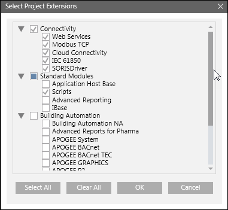

(Optional) Add to or Remove an Extension from a Project
From the installed extensions on the Server, you can add extensions that are not yet added to the project. You can also remove the extensions that are no longer needed in the project.
- (Applicable for extension addition to project) You have installed all extensions that you want to add to the project.
If the extension is installed after project creation, you must restart SMC so that the newly installed extensions become available for addition in project in SMC. - (Applicable for extension removal from project) You have removed any node related to the extension from the System Browser. For example, to remove the Modbus extension, you have removed the Modbus network or Modbus driver nodes from the System Browser.
– You have removed any customization done to the extension that you are about to remove from the project. For example, customization to the Client profiles or libraries (Object Models) or a web application of the extension and so on. - The extension that you want to remove is not a dependent extension for any other extension.
- You have taken a backup of the project to which you want to add or remove extensions.
- The upgraded project is stopped and selected in the SMC tree.
- In the Project Settings toolbar, proceed as follows:
- To add the extension to the project, click Add to project
 .
.
NOTE: You cannot add or remove a mandatory extension from a project. They are not available for addition/removal in the Select Project Extensions dialog box. - To remove an extension from the project, click Remove from project .
NOTE: If you select a parent extension, its child also gets selected for removal. You must manually uncheck if you do not want to remove it. - In the Select Project Extensions dialog box that displays, expand the desired extension suite and select the extension that you want to add to/remove from the project.
- Click OK.
- Click Save
 .
. - (Only when removing extension from a project) A confirmation message displays.
- Click OK.
NOTE: A message may display if an extension was unable to be removed from the project. - On successful completion, the selected extension is added to/removed from the project.
NOTE: For configuration details of specific extensions during a project creation or restore, see the Help of the respective extension. 
- If the extension you have removed from the project includes a Client profile, then upon removal from the project, SMC deletes the associated Client profile (.ldl) from project's profiles folder.
In this case linked station or user uses the Default profile. - Similarly, if the extension you have removed from the project includes Event Schema, then the Event Schema is also deleted and the station or user associated with it falls back on the default schema.
It is recommended to remove the older events displayed in the summary bar as they not consistent with the currently active schema (For more information see, Remove Events of a Server Project in Restoring a Project or Creating a Project from a Template.)
To remove the older events (events with the old schema) logged in the database, it is advised to purge the database. (For more information, see Additional HDB Toolbar Control Procedures in History Infrastructure Procedures.)
For example, if you remove the extension Desigo System that uses BA_EN client profile and the EN event schema which is configured for a Server station , then after this EM removal, as the associated client profile and Event Schema is also deleted, the Server stations' Client profile and Event schema is set to the default client profile and the default schema.